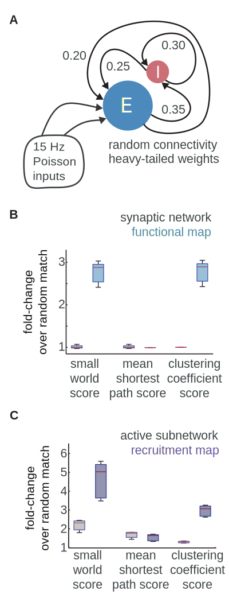
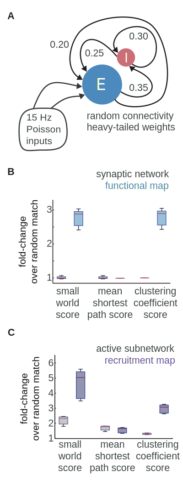

PORTFOLIO
Here is some of my work in scientific visualization, excerpted from publication.
I performed all the underlying data collection, analysis, and computational modeling.
If you would like to know more, don't hesitate to be in touch. Thanks for taking a look.
I performed all the underlying data collection, analysis, and computational modeling.
If you would like to know more, don't hesitate to be in touch. Thanks for taking a look.


 
